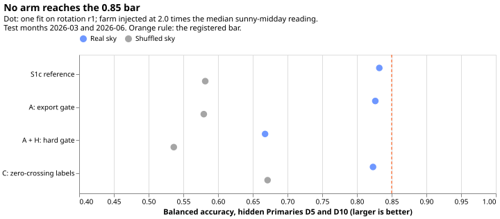
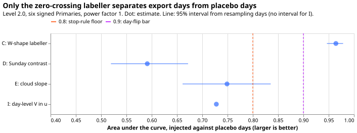

Can a Primary-level export gate, or labels taken from the zero crossings of the daily reading, stop the signed mixture density network from inventing reverse flow at MVA-only Primaries?
Status: done. The stop rule fired: A, A+H, and C all failed the bars on rotation r1, and the
day-flip diagnostic (design I) missed its bar. The results sections at the end report the numbers.
The plan sections below were written before any fit. This plan follows the Opus design note of
2026-10-30 (private folder: briefs/neural_mva_new_ideas_answer.md), which proposes eight
constraints (A to H) against false reverse flow at the eight Primaries whose meter reads apparent
power (MVA) only.
Question and plan in plain words
Some Primaries report only the size of the power flowing, not its direction, so a forecast cannot say whether the flow is demand or solar generation pushing power back up the network. Experiment 412 trained a neural network to infer the direction from the sunshine. With the direction hidden at two Primaries where it is known, the network called reverse flow on 17% of the half-hours that had none, and on 18% to 47% of sunny half-hours when no solar farm was added at all. This experiment tests two constraints that decide the direction with information the network cannot fit from the same readings: one yes-or-no decision per Primary about whether it exports at all, and training labels from the two daily times at which the flow passes through zero.
Evidence the plan follows
- Experiment 412 merged as not supported (pull request 69). The capacity prior was inert: 13 nats against a loss over 5.6 million rows moved the capacities by under 0.2 points, and a prior at full weight pulled the capacity to the prior centre and removed the skill with the false calls (balanced accuracy 0.54 to 0.61, within 0.04 of the shuffled sky). This plan adds no capacity prior and keeps the registered, divided prior, whose gradient share the fit script prints in every arm that has it.
- Experiment 408 is still a draft plan (pull request 64), with an interim block. Its rule-only diagnostics (refit 2026-01-01) show the rule's gate opening on real readings at D10 and D12 only, so it stays closed at D5, and the rule's labels reaching recall 0.64 to 0.79 with a false-reverse rate of 3.8% to 6.1% at level 2.0. Design A copies that rule, so P1's 5% bar sits inside the range the rule already reaches, and the plan says so in the prediction.
- Experiment 416 is a draft plan (pull request 73). It tests an explicit solar term inside the demand network at the signed Primaries and has no results. Nothing in this plan depends on it.
- Experiment 409's learned capacities were 0.40 to 0.50 of the studies page at five Primaries (quoted by the design note), so design G (borrowed capacity) is not run.
- Standing rules of 2026-10-30 applied. Monthly refits only; cleaned data (experiment 397's rows) with the dropped count per fold reported; D15 and D18 cut before 2025-03-01; every fitted network saved as a state file; draft pull request; the seven-step review order (code review before the first fit, results review, write-up review); a day-ahead and a 14-day example forecast are not drawn, because this experiment scores the sign of reverse flow and not the forecast (stated as a departure).
- Weather inputs are CAMS and ERA5 only, realised, in laboratory conditions; no ECMWF ENS. CAMS
gives the unit PV shape
uand the clear-sky indexkas in experiment 412. ERA5 gives temperature at each Primary (era5_features.parquetof the stage 1 pilot, stamped every 30 minutes to 2026-07-31, interpolated linearly to the half-hour's midpoint), the demand module's only weather input. ERA5 shortwave serves only as a cross-check of CAMS in the diagnostics. The day-ahead behaviour of every design stays untested.
Code
All code is in ml-experiments/00417-hidden-sign-mva-export-gate-zero-crossing-labels/.
e00417_inputs.pycopies experiment 412'ssite_arraysandbuild_fold, and changes three things. The demand module's input columns are the irradiance-free columns of experiment 405 with every ensemble mean and spread column removed and one ERA5 temperature column added (standardised on the training rows).Settinggains a power factor with demand-driven reactive power, as in experiment 366: the reading issqrt(P'^2 + (tan(phi) y)^2 + Q^2), withythe Primary's own signed power before the farm is injected andtan(phi)fromstudies.dp_operator.tan_phi_from_power_factor(power factor 1 is experiment 412's reading). The reactive term follows the demand, so it fills the midday dip, which is what defeated experiment 366's rule. The lags use the same definition. The fold also carries each row's valid time andk.e00417_models.pyimports experiment 412'sSignedMdn, mixture functions, and quantiles. It adds a negative log-likelihood with a per-row mask for where the folded density applies and an optional signed label for labelled rows.e00417_gates.pyholds the Primary-level gate (design A: experiment 366's rule as experiment 408 fits it, a Spearman correlation of the reading withuabove +0.3 on sunny summer-midday training rows, or a 1st percentile below 3 points of capacity, which is 1 point above the reactive floor, because every folded reading is at least 2 points and only the correlation branch can fire. The +0.3 comes from experiment 366's results on these same Primaries, so the gate is not a clean out-of-sample choice) and the high-irradiance gate H (u_hi(h) = D_ref(h) / C_maxwithD_ref(h)the median reading at UTC hourhon overcast summer training rows (kbelow 0.3) andC_maxthe largest studies-page capacity (an external figure), in points, among the four signed Primaries that are not hidden, never the hidden pair; the gate isu >= max(0.3, u_hi(h))withuthe scaled shape).e00417_diagnostics.pyruns the zero-fit diagnostics of C, D, and E, and the zero-crossing labeller of design C.e00417_fit.pyfits and forecasts,e00417_score.pyscores (copying experiment 412's metrics and adding the capacity and the prior's gradient share), ande00417_figures.pydraws the figures.
Zero-fit diagnostics (run first)
The diagnostics read the folded readings at the six signed-MW Primaries before any network is
trained. Rows are unique valid times before 2025-07-01 (the window that sets the injection level),
with the minimum of k over t0 ± 5 h at least 0.7 on the day for C (a clear day) and k at
least 0.7 at the half-hour for D and E. Settings:
level 2.0 (reactive floor 2 points), level 1.0, level 2.0 at power factor 0.97, and no injection.
The no-injection group is D5, D9, D11, D14, and D16, and D10 is reported on its own, because its 130
real reverse half-hours make it no clean placebo.
- C, the W-shape score. On each sunny day, with
t0the solar noon: the left minimum is the smallest reading int0 - 5 htot0 - 1 h, the right minimum the smallest int0 + 1 htot0 + 5 h, and the centre maximum the largest int0 - 1 htot0 + 1 h. The score is the smaller of the two differences (centre maximum minus each minimum), in points of capacity. It is positive when the reading crosses zero twice and negative on a day with one smooth midday dip. The area under the curve compares injected days with no-injection days, per Primary and pooled. The labeller calls the half-hours between the two minima reverse flow on days whose score exceeds a threshold, which is the 99th percentile of the score over the no-injection days of the four visible signed Primaries (D9, D11, D14, D16), so the threshold uses no information from the hidden pair. In a fit the threshold is recomputed per refit from the rowsbuild_foldselects (up to the refit minus the cutoff age, inside the 730-day window), and its value is reported per refit. The diagnostics also report the labeller's recall and false-positive rate at that threshold on D5's injected and no-injection days. - D, the Sunday-and-holiday contrast. For each clear Sunday or bank holiday, the difference between its midday reading (10 to 14 UTC) and the mean midday reading of clear Tuesdays to Thursdays within 14 days, after removing a linear ERA5-temperature term fitted on those days. The area under the curve compares the differences of injected and no-injection pairs. The sign of the same difference at night (22 to 04 UTC) is reported beside it as a control.
- E, the sunny-versus-cloudy slope. In each Primary-month, the slope of the midday reading on
kafter removing a mean for each half-hour of the day and ISO week, with ERA5 temperature as a covariate. The area under the curve compares injected and no-injection Primary-months. - Reported with each area: the number of units behind it (days, pairs, or Primary-months), and its 95% interval from a bootstrap that resamples whole days within each Primary (E: Primary-months within a Primary). The bars (0.9 for C, 0.8 for D and E) and the stop rule's 0.8 apply to the pooled point estimate, and the per-Primary areas are reported beside it. D's temperature term is fitted separately for each Primary.
Fits (after the code review, with the manager's slot)
Every arm runs on experiment 412's harness: rotation r1 (D5 and D10 hidden), level 2.0 with Q = 2 points, test months 2026-03 and 2026-06, one seed, one GPU process. One arm is 6 fits: injected, no-injection placebo, and shuffled sky, each in both months. The power-factor setting adds 2 fits (injected, both months).
| Order | Arm | What it is | Fits |
|---|---|---|---|
| 1 | S1c-ref | Experiment 412's S1c on the CAMS-and-ERA5 inputs | 6 + 2 |
| 2 | A | S1c with the Primary-level gate: a Primary whose gate is shut trains and forecasts with X >= 0 (the truncated density everywhere) |
6 + 2 |
| 3 | A+H | A with the high-irradiance row gate H on the Primaries whose gate is open | 6 + 2 |
| 4 | C | S1c with the zero-crossing labels as signed targets on labelled rows | 6 + 2 |
Design B (demand frozen off the gate) runs only if A passes the placebo and leaves the within-pair false-reverse rate above 5%. Designs D and E enter the fits only if their diagnostics pass and A and C fail. Designs F and G are not run.
- Gate decisions are printed before any fit. Design A differs from S1c-ref only where the gate is shut, so A at a hidden Primary whose gate is open is the same fit as S1c-ref and its result is copied from S1c-ref (same seed), not refitted. A shut gate at D5 in the no-injection setting gives zero false reverse by construction, which tests the gate and not the network, and the write-up says so. A cannot lower the false-reverse rate at a Primary where the gate is open. A+H differs from A only through the row gate H, and is fitted in full.
- Gate timing. Design A's gate is computed once per Primary per refit from the folded readings
in the training window (rows before the refit), using the real
uandk, also in the shuffled-sky arm. - Labels. Design C's labels are computed once per Primary per refit from the training window
only. Only days whose W score exceeds the threshold are labelled: reverse between the two minima,
forward outside them. Labelled rows use the signed density at
y' = +-sqrt(max(r^2 - Q0^2, 0))with no folding. Every other row, including sunny days below the threshold, keeps the folded likelihood with experiment 412'su >= 0.3gate, so moderate export is never taughtX > 0. - Compute. Experiment 412 timed a fit at 29 to 83 seconds, 45 seconds to 3 minutes with the fold
build, so 32 fits take 25 minutes to 1.6 hours on one GPU process under 8 GB with one feeder
core, run as
systemd-run --user --scope -p MemoryMax=8G -p OOMPolicy=continue, withfree -gchecked before each launch and the run stopped if available memory falls below 12 GB (the manager's limit for this experiment). Refits are monthly. No stored forecast is reused, because experiment 412 read ENS inputs. State files go tomodels/<arm>/in this experiment's private folder.
Scoring
The scoring is experiment 412's, unchanged: the headline slice is gate-open half-hours (u >=
0.3) with k at least 0.7, a predicted reverse flow is P(X < 0) > 0.5, the false-reverse rate
has as its denominator the sunny summer-midday half-hours with no injected and no real reverse flow,
and every recall is reported with its half-hour count. The prior penalty's share of the capacity
gradient is printed for every arm. Tail calibration (coverage and pinball loss of the 0.01, 0.05,
0.95, and 0.99 signed quantiles) is reported per Primary beside the sign scores, and a
signed-median-against-truth example is drawn at D5 and D10. The reference's absolute numbers may
differ from experiment 412's, because the inputs differ. The first three arms' numbers are interim
(two months, one seed, point estimates only).
Code review before the first fit
A fresh Sonnet reviewer found no leakage and no blocking problem. Accepted: the W-score centre
window was ±0.5 h and is now ±1 h as planned (the diagnostics were re-run); bars now scores the
registered bars. Noted, not changed: the capacity prior centre is the median studies-page capacity
of all six signed Primaries, the hidden pair included, as in experiment 412 (external information,
not the hidden sign, and the prior is inert); the ERA5 file is stamped every 30 minutes, so the
midpoint interpolation averages two samples; a Primary with fewer than 200 sunny summer-midday
training rows gets a shut gate by default, and the row count is stored beside the decision; the
bootstrap resamples injected and no-injection days separately although they are paired, and D10
enters the injected pool only; the 1st-percentile branch of the gate does fire (at D5, D8, and D10,
whose readings sit at the 2-point floor), contrary to an earlier reading of the plan.
Amendment 1 (2026-10-30): a day-level diagnostic, designs I and C merged
The maintainer, through the neural Discuss session, added design I, and an Opus review refined it
and merged it with design C into one day-level zero-fit diagnostic (e00417_day_flip.py, run in
the first batch beside D and E). Design I as first written (a slope against raw irradiance on
sunny half-hours) is superseded, because its clear-sky row filter removes the clouds and ordering by
raw irradiance confounds the flip with the time of day.
- The refined score. Per April-to-September day, on UTC-hour means: regress on the CAMS unit PV
shape
u(not raw irradiance), keep hours with0.1 <= u < 0.95, and work one = r^2 - D^2, whereDis a demand profile (the median reading by hour over overcast days of the same 28-day block and day type, plus an ERA5-temperature term fitted on those days). On the morning limb and on the afternoon limb separately, the score is the drop in residual sum of squares from the best non-increasing fit ofeonuto the best two-piece line with a positive upper slope, divided by the two-piece sum of squares. The day's score is the smaller limb score, and a day with a daily maximumubelow 0.6 is ineligible. - Threshold and truth. A day is flagged above the 98th percentile of the other five signed
Primaries' no-injection day scores (leave one Primary out; in a fit, the visible four only). A day
is positive when at least 2 of its half-hours have signed
P' < 0. - Arms. Level 2.0 at Q = 2 and Q = 4 points, level 1.0, level 2.0 at power factor 0.97, the no-injection placebo, the shuffled sky, and a clipping arm with the injected farm capped at 70% of its own peak. Two baselines: a day score from its mean midday residual alone (the level baseline), and the shuffled sky. The Haurwitz clear-sky arm and the 2026-03 and 2026-06 test-month reports of the Opus note are not run.
- Bar for a neural fit (level 2.0, both Q settings): area under the curve at least 0.9, recall
at least 0.7 within a 2% false-flag limit at each of D5, D9, D11, D14, and D16, area under the
curve above the shuffled sky by at least 0.15 and above the level baseline by at least 0.05, and
row labels (a flagged day, with
uat or above the day's breakpoint minus 0.05) at balanced accuracy 0.85 with false-reverse at most 5%. Level 1.0 and power factor 0.97 are reported and expected to fail. If the bar is met, armAHI(S1c with design A's gate and the day gate together, in place of the separate A-plus-H arm; 6 fits plus 2 at power factor 0.97) is fitted, with the day flag reading the test days' observed readings (hindsight, a laboratory condition) and never the signed truth. A fresh Sonnet reviewer reads the new code before any gate uses it.
Amendment 2 (2026-10-30): power factor 1, with 0.97 only as a sensitivity check
The maintainer's assumption is power factor 1 plus the small reactive floor Q, not 0.97. The
farm output is injected at power factor 1 with the 2-point floor, and every fit and every pass or
fail rule uses that reading. The two extra fits per arm at power factor 0.97 are dropped from the
plan, and the power-factor rows above (prediction P4, the "+ 2" fits per arm, and the diagnostics
at power factor 0.97) are sensitivity checks that no rule reads. The reference arm and arm A had
already run their power-factor fits when this amendment arrived; those files are labelled
sensitivity and no pass or fail rule uses them. The main fits (injected, no-injection, and shuffled
sky) had all run at power factor 1, so nothing needs a rerun. A power-factor fit of the remaining
arms runs last, only if the machine is idle (e00417_fit.py run --only pf).
Departures from the design note
- The H arm is A with H layered on top, not H alone, and the D5 placebo "should still fail with H alone" is not tested.
- Design C omits the note's CAMS filter that discards a minimum coinciding with a dip in CAMS
irradiance. The day filter (
kat least 0.7 acrosst0 ± 5 h) removes cloudy days instead. - Design A reuses S1c-ref's fits where the gate is open (see "Fits").
- Power factor 0.97 uses reactive power proportional to the Primary's own demand, as experiment 366 did, with the 2-point floor kept.
- Designs B, D, and E run only as follow-ups after the stop decision.
- Tail calibration and example plots follow
common.md; day-ahead and 14-day forecast graphs are not drawn, because the experiment scores the sign.
Risks
- The shuffled sky keeps the daylight profile (experiment 405), so it may score above chance; P1 asks for a margin of 0.1 and not for chance.
- A Primary-level gate decides once, so a wrong decision costs the whole Primary. The diagnostic of the gate at the injected pair and the placebo is reported before the fit.
- Reactive power at power factor 0.97 raises the readings the likelihood treats as real power, which experiment 366's rule could not survive; the 2 power-factor fits report how far design A and C degrade.
- The ERA5 temperature is realised weather, available about 5 days late, and the CAMS inputs about 1 day late, so every result is a laboratory result.
- Moderate export (level 1.0) may give no W shape, so design C may only work at heavy export. Level 1.0 is run in the diagnostics only.
- Unlogged load-shift events may sit in the readings, as NGED says its logs are incomplete.
Results (interim: two test months, one seed, no intervals)

No arm reached the 0.85 pooled balanced accuracy bar. One fit per arm and setting, on rotation r1 (D5 and D10 hidden), level 2.0, power factor 1, reactive floor 2 points.
| Arm | Pooled BA | D5 BA | D10 BA | False reverse | D5 placebo, sunny middays | Margin over shuffled sky |
|---|---|---|---|---|---|---|
| S1c reference | 0.832 | 0.813 | 0.857 | 11.0% | 86% | 0.25 |
| A: export gate | 0.826 | 0.801 | 0.858 | 12.0% | 0% (gate shut) | 0.25 |
| A + H: hard gate | 0.668 | 0.638 | 0.703 | 3.6% | 0% (gate shut) | 0.13 |
| C: zero-crossing labels | 0.823 | 0.801 | 0.854 | 13.9% | 85% | 0.15 |
- Design A passed the placebo by construction and failed the 5% bar, as the plan predicted. The export gate stays shut at D5 with no farm injected, so the density is truncated at zero and nothing reverses. With the farm injected, the export gate opens at both D5 and D10, and the false-reverse rate at the pair was 12.0% (11.0% for the reference).
- The hard gate H traded recall for precision. Recall fell from 0.77 (A) to 0.37 and balanced accuracy to 0.67, so A+H fails the 0.85 pooled balanced accuracy bar and, at D5 (0.638), the 0.70 per-Primary bar.
- Design C's labels gave the reference's balanced accuracy and its placebo fault. D5 with no farm still called reverse flow on 85% of sunny middays.
- The prior penalty stayed inert in every real-sky arm. The penalty's share of the gradient was 0.0001 to 0.0004 (0.002 to 0.005 in the shuffled-sky arms), so no result here comes from a capacity prior.
- Power-factor 0.97 (sensitivity only). The reference kept pooled balanced accuracy 0.830, and design A's export gate stayed shut at the injected D5, giving balanced accuracy 0.50 there.

Of the zero-fit diagnostics, only the W-shape labeller (C) cleared its bar, and the day-level V in the unit PV shape (design I) did not. At level 2.0 the pooled area under the curve was 0.96 (interval 0.95 to 0.98) for C, 0.59 for D, and 0.75 for E. At level 1.0 the area for C fell to 0.58. The day-level diagnostic (design I), with its regime split and the broken-cloud amendment, reached 0.73 against the 0.9 bar (0.70 when injected days are paired with their own placebo days). Its recall was 0.22 against 0.7. Its false-flag rate was 5.5% at D5 and 8.2% at D10, against the 2% limit. The roughness split put about 99% of days in the broken-cloud class, so the smooth-day area is undefined and the regime comparison could not be made. The registered prediction that one diagnostic stays at 0.8 or above at level 1.0 also failed: C fell to 0.58 and D was 0.59, and E gave an inverted 0.07.
Checks
- The stop rule fired. A (with or without H) and C both failed on rotation r1, so the signed-MW work stops and the experiment counts as the eighth failed treatment.
- The export gate showed no measured gain where it opens. Arm A is the reference plus the gate, and was refitted, not copied from the reference. Its pooled balanced accuracy (0.826) was 0.006 below the reference's (0.832), a gap within one seed's noise.
- Two audit triggers fired. The reference and design C failed the D5 placebo (a failed control), and design C's labels did not lift the fits although its diagnostic passed, against the prediction (P3) that C passes all bars. No Opus audit was requested, because the result is a stop rule firing on registered bars.
- Four checks were not done. No intervals (one seed, two test months), rotations r2 and r3 not run, the AHI arm not fitted because design I missed its bar, and no figure of signed-median examples was drawn.
Problems caused by the move
None.